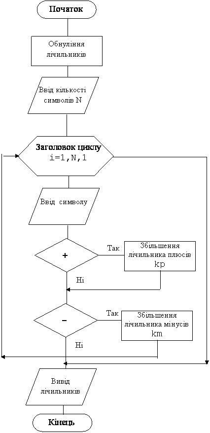

Назад
Зміст
Вперед
Задачі на рахування символів
В попередньому завданні символи вибиралися за умовою з таблиці ASCII та виводились на екран.
Тепер символи будуть будь-які. Вони будуть вводитись з клавіатури, перевіряться на відповідність умові, та підраховуваться.
Приклад 1
Ввести з клавіатури n будь-яких символів. Скільки серед них „+”? Скільки серед них „–”?
Дано: n – кількість введених символів та самі символи.
Знайти:
підрахувати окремо плюси та мінуси.
Змінні:
Вхідні:
- n – кількість введених символів (ціле число)
- a – сам символ (символьне)
Вихідні:
- kp – кількість ”+” (ціле число)
- km– кількість ”-” (ціле число)
Проміжні дані:
- i – параметр циклу (ціле число)
Алгоритм
- Спочатку потрібно присвоїти початкове значення лічильникам kp, km
- Вводимо n – кількість символів, що будемо вводити. Це значення буде визначати кількість витків циклу.
- У тілі циклу у операторних дужках виконуються такі дії:
- Оператор readln(a) вводить символ у змінну a. Для вводу символів використовувати тільки оператор readln. Символи вводити у стовпчик. Символів буде n. Але кожний наступний символ ми будемо вводити в одну і ту ж змінну, затираючи попередній. Це не страшно, бо з попереднім символом, на попередньому витку цикли вже будуть виконані всі необхідні дії.
- Якщо введений символ плюс, то збільшуємо лічильник kp.
- Якщо введений символ мінус, то збільшуємо лічильник km.
- Коли цикл закінчиться, тобто будуть введені всі n символів, виводиться на екран значення лічильників kp та km.
Блок–схема програми

Програма
var i,n,kp,km:integer; a:char;
begin
kp:=0; km:=0;
readln(n);
for i:=1 to n do
begin
readln(a);
if a='+' then:=kp+1;
if a='-' then km:=km+1;
end;
writeln(kp,' ',km);
end.
|
Результат роботи програми
| № | Ввід | Вивід | Поясненняі |
|---|
| 1 |
5
s
+
-
t
-
|
1 2
|
Перше введене число це значення змінної n=5. Інші символи це значення змінної a. Серед 5 символів, вибрані + та -. Плюсів 1, мінусів 2.
|
| 2 |
4
5
+
+
+
|
3 0
|
Перше введене число це значення змінної n=4. Інші символи це значення змінної a. Серед 4 символів, вибрані + та -. Плюсів 3, мінусів немає, тобто 0.
|
Приклад 2
Ввести з клавіатури n будь-яких символів. Скільки серед них маленьких російських літер?
Дано: n – кількість введених символів та самі символи.
Знайти: підрахувати маленькі російські літери.
Змінні:
Вхідні:
- n – кількість введених символів (ціле число)
- a – сам символ (символьне)
Вихідні:
- k–кількість маленьких російських літер (ціле число)
Проміжні:
- i – параметр циклу (ціле число)
Алгоритм
- Спочатку потрібно присвоїти початкове значення лічильнику k
- Вводимо n – кількість символів, що будемо вводити. Це значення буде визначати кількість витків циклу.
- У циклі for i:=1 to n do у операторних дужках будемо виконувати такі дії:
- Оператор readln(a) вводить символ у змінну a.
- Якщо введений символ маленька російська літера, то збільшуємо лічильник k. Російські літери а таблиці ASCII, представлені двома діапазонами [а, п] та [р, я]. Тому кожна маленька російська літера належить або першому діапазону(a >= 'а')and(a <= 'п'), або другому(a >= 'р')and(a <= 'я').
- Коли цикл закінчиться, тобто будуть введені всі n символів, виводиться на екран значення лічильнику k.
Програма
var i,n,k:integer; a:char;
begin
k:=0;
readln(n);
for i:=1 to n do
begin
readln(a);
if (a >='а')and(a <='п')or
(a >='р')and(a <='я') then k:=k+1;
end;
writeln(k);
end.
|
Результат роботи програми
| № | Ввід | Вивід | Поясненняі |
|---|
| 1 |
5
s
ж
4
ш
и
|
3
|
Перше введене число це значення змінної n=5. Інші символи це значення змінної a. Серед 5 символів, є англійські та російські літери та цифра. Російських літер 3
|
| 2 |
4
5
D
Z
7
|
0
|
Перше введене число це значення змінної n=4. Інші символи це значення змінної a. Серед 4 символів, дві англійські літери та дві цифри. Російських літер немає, тобто 0.
|
Варіанти задач
- Ввести з клавіатури n будь-яких символів. Скільки серед них „*”?
- Ввести з клавіатури n будь-яких символів. Скільки серед них цифр?
- Ввести з клавіатури n будь-яких символів. Скільки серед них „?” та „!” разом?
- Ввести з клавіатури n будь-яких символів. Знайти кількість не цифр.
- Ввести з клавіатури n будь-яких символів. Скільки серед них маленьких латинських літер?
- Ввести з клавіатури n будь-яких символів. Скільки серед них великих латинських літер?
- Ввести з клавіатури n будь-яких символів. Скільки серед них латинських літер?
- Ввести з клавіатури n будь-яких символів. Скільки серед них великих російських літер?
- Ввести з клавіатури n будь-яких символів. Скільки серед них російських літер?
- Ввести з клавіатури n будь-яких символів. Скільки серед них російських голосних?
- Ввести з клавіатури n будь-яких символів. Скільки серед них англійських голосних?
- Ввести з клавіатури n будь-яких символів. Чого більше літер чи цифр?
- Ввести з клавіатури n будь-яких символів. Підрахувати загальну кількість символів крапок та ком.
- Ввести з клавіатури n будь-яких символів. Підрахувати загальну кількість не цифр.
- Ввести з клавіатури n будь-яких символів. Порівняйте кількість символів коми та кількість символів крапки.
- Ввести з клавіатури n будь-яких символів. Порівняйте кількість літер та кількість цифр.
- Ввести з клавіатури n будь-яких символів. Порівняйте кількість латинських та російських літер.
- Ввести з клавіатури n будь-яких символів. Чи вірно, що серед них рівно два символи ”+”?
- Ввести з клавіатури n будь-яких символів. Чи можна з них скласти слово „мама”?
Назад
Зміст
Вперед